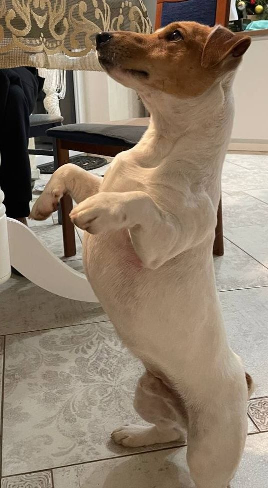

Обо мне
Здравствуйте. Я — Лена Журун. Бухгалтер, мама двоих детей и человек, который привык не бояться ответственности. В работе я внимательная, собранная и люблю, когда во всём есть порядок. Для меня цифры — это не просто расчёты, а часть большого дела, где важны точность, честность и доверие.
Я прямолинейная и упорная: говорю как есть, а если ставлю себе цель — иду к ней до конца. Не люблю ложь: считаю, что доверие строится только на честности и на том, что человек держит своё слово.
Главная моя гордость — мои дети. Именно они каждый день напоминают, ради чего стоит стараться, развиваться и двигаться дальше.
Но за профессиональной строгостью есть совсем другая Лена — женщина, которая много пережила, многому научилась и всегда продолжала идти вперёд. Жизнь не всегда складывалась просто, но именно трудности сделали меня сильнее, научили ценить близких и не принимать счастье как что-то само собой разумеющееся.
Вне работы я отдыхаю совсем иначе: копаюсь в саду, выращиваю цветы, вожусь с собакой — у меня джек-рассел-терьер по имени Ларс, и это отдельная большая любовь. А если выдаётся свободный вечер, люблю испечь что-нибудь вкусное — это мой способ немного притормозить и позаботиться о близких.
Я верю, что судьба складывается не только из того, что нам выпадает, но и из решений, которые мы принимаем. Поэтому я стараюсь с благодарностью смотреть на прошлое, с уверенностью — в настоящее и с надеждой — в будущее.

Ради чего встаю по утрам — это забота о близких, время, проведённое вместе, и уют в доме. А ещё работа и цели, которые я себе ставлю: мне важно доводить начатое до результата и видеть, что усилия что-то значат. В людях больше всего ценю искренность, надёжность и ответственность. Если человек держит слово — с ним можно строить дело.
Портфель проектов
Бухгалтер по профессии, но веду далеко не только отчётность. У меня несколько направлений, за которые отвечаю сама — от работы до дома, от сада до собаки.
Главное дело: семья и дом
Моё самое важное вложение времени и сил — семья. Двое детей, дом, в котором должно быть уютно и спокойно. Здесь я и организатор, и опора: слежу, чтобы у всех было то, что нужно.
Бухгалтерия
Моя профессиональная база: точность, порядок и ответственность за цифры, которым доверяют. Здесь я привыкла не бояться сложных задач и доводить дело до конца.
Сад и цветник
Выращиваю цветы, люблю копаться в огороде. Результат здесь виден не в отчётном периоде, а в том, что распустилось за окном.
.jpg)
Воспитание Ларса
У меня джек-рассел-терьер по имени Ларс. Забота о нём — тоже своего рода проект: дисциплина, внимание и немного упрямства с обеих сторон.
Домашняя выпечка
Когда появляется свободное время, пеку что-нибудь вкусное — небольшой, но важный проект «для настроения» и для тех, кого люблю.
Упорство и умение доводить цели до конца, внимательность к деталям, честность и надёжность — на этом строится всё, за что я берусь. А ещё — способность совмещать строгий учёт на работе с заботой о доме, саде и собаке, и находить в этом баланс.
Немного обо мне
- Прямолинейная — говорю как есть, без экивоков. Не люблю ложь и сразу её чувствую.
- Упорная: если ставлю себе цель, иду к ней до конца, даже если путь не самый простой.
- Люблю порядок во всём — не только в бухгалтерских отчётах, но и дома, и в саду.
- В свободное время пеку что-нибудь вкусное — это мой способ отдохнуть и позаботиться о близких.
- Несмотря на серьёзную профессию бухгалтера, дома я — увлечённый садовод: люблю цветы и с удовольствием копаюсь в огороде.
- У меня джек-рассел-терьер по имени Ларс — и, кажется, я люблю животных больше, чем готова признать в рабочее время.
- Больше всего в людях ценю искренность, надёжность и ответственность — и всегда обращаю внимание, держит ли человек слово.